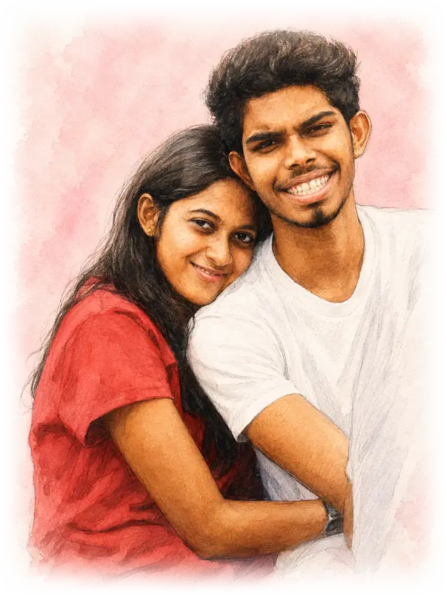
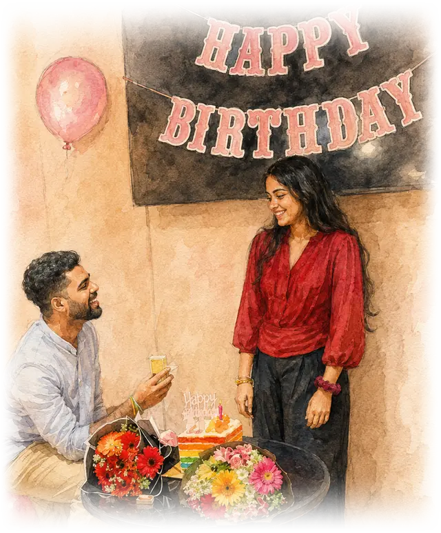
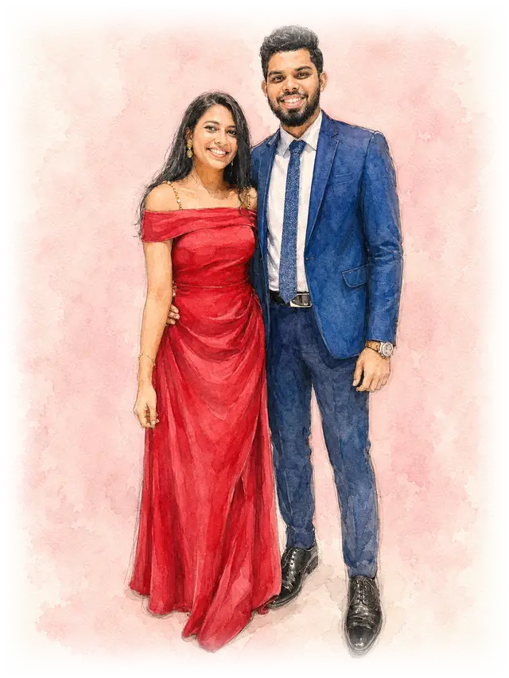
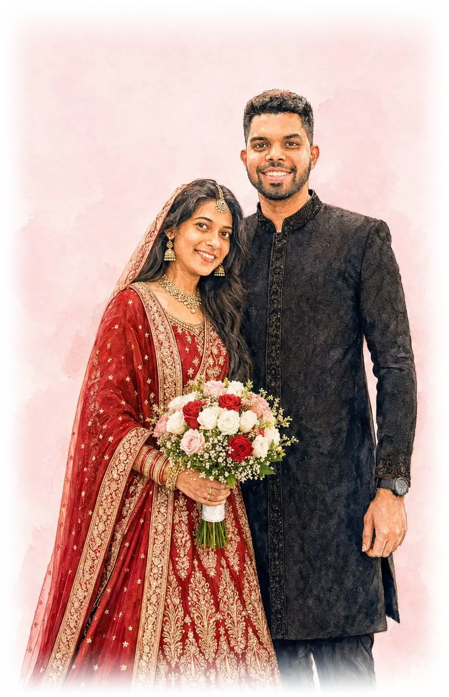

How it all began
Ten years, and the short version.
2016
The beginning
We met in March 2016, and somehow that meeting changed everything.

2016 – 2025
Everything in between
A/Ls, university, graduations, dreams. We laughed, cried, fought, made up, celebrated, struggled and grew together.
2026
A question that changed everything
Ten years brought us countless memories, and in June 2026 a surprise proposal made it official.

A promise made, a new journey begins
Hoping to tie the knot.

The homecoming
And now the part we have been looking forward to: celebrating it with you.

From a first date to the day we tie the knot — this is our story.